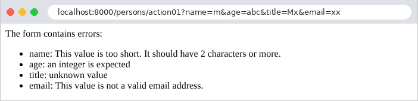

3. El modelo de la acción
Una acción necesita información enviada por el navegador: los parámetros de la URL ([?name=martin&age=42]), los campos de un formulario, el cuerpo JSON de la solicitud y, a veces, un encabezado HTTP de la solicitud. El curso original denomina toda esta información el modelo de la acción. Este capítulo muestra cómo una acción de [Symfony] recupera esta información, la convierte al tipo correcto y la valida. Este proceso se denomina enlace de datos (data binding).
[Symfony] proporciona acceso a la información de la solicitud mediante el objeto [Request] (ejemplo 05), en forma de cadenas de caracteres, junto con algunos métodos de conversión. También puede enlazar esta información a los parámetros de una acción mediante atributos ([#[MapQueryParameter]], [#[MapQueryString]], [#[MapRequestPayload]]) y validarla con su componente Validator: describimos los datos esperados mediante restricciones (“obligatorio”, “un entero entre 0 y 150”, etc.), escritas como atributos como en [PHP], y el validador comprueba que los datos las cumplan. Primero leeremos los parámetros manualmente (ejemplo 07) y luego dejaremos que el framework se encargue de su conversión y validación (ejemplos 08 a 12). En el próximo capítulo, las mismas restricciones validarán los formularios HTML.
Observe la terminología: en el próximo capítulo, la palabra “modelo” se referirá principalmente a los datos que una acción pasa a su vista. El modelo de una acción, tal como se usa en este capítulo, es lo que ella recibe.
Los ejemplos 07 a 12 se ejecutan de la misma manera que los del capítulo anterior: un terminal abierto en la carpeta del ejemplo, [php -S localhost:8000 -t public]; [Ctrl-C] detiene el servidor. La mayoría usa el listener [ReadableJson] del ejemplo 03, lo que da como resultado un JSON legible. Solo comentaremos sus archivos de configuración cuando introduzcan algo nuevo.
3.1. Ejemplo 07: los parámetros de la URL
Los parámetros de la URL son la porción que sigue a [?]: [?name=martin&age=42]. Esta porción se denomina cadena de consulta (query string). Cada parámetro es un par [name=value]; los pares se separan con [&]. El controlador [ParametersController]:
- línea 22: la propiedad [query] de la solicitud contiene los parámetros de la URL, en una “bolsa” de parámetros (un objeto [InputBag]), cuyo método [get] devuelve el valor de un parámetro (ya decodificado) o [null] si está ausente;
- línea 23: la acción muestra el valor y su tipo: la función [get_debug_type] devuelve el nombre del tipo de un valor. Un valor obtenido de la URL es siempre una cadena ([string]). El operador [.] concatena la cadena interpolada y el tipo;
- Línea 32: El método [getInt] lee el parámetro y lo convierte a entero. Un parámetro ausente devuelve 0; un valor que no es un entero ([abc]) provoca un error 400 (Bad Request). De manera similar, existe [getBoolean] ([1], [true], [on] y [yes] son verdadero), [getString], [getAlpha] (solo letras), [getDigits] (solo números), [getEnum] (una lista);
- líneas 41–51: un parámetro obligatorio y una conversión manual que distingue entre los dos errores posibles. [throw new BadRequestHttpException(message)] termina la operación con una respuesta 400, acompañada del mensaje (véase el ejemplo 03, que también lanzó una excepción 404). La función [filter_var] de [PHP], con el filtro [FILTER_VALIDATE_INT], devuelve el entero contenido en la cadena, o [false] si la cadena no es un entero;
- línea 58: El segundo parámetro de [getInt] es un valor predeterminado, que se usa si el parámetro está ausente. Este suele ser el caso del número de página en una lista;
- línea 67: no es obligatorio que la variable [PHP] tenga el mismo nombre que el parámetro de la URL. Los motores de búsqueda suelen usar un parámetro corto, [q] (query);
- línea 75: [all()] devuelve todos los parámetros de la URL en un arreglo asociativo, que la acción convierte a JSON (véase el ejemplo 03);
- líneas 81–85: el enfoque declarativo. El atributo [#[MapQueryParameter]], colocado antes de un parámetro de la acción, vincula ese parámetro con el parámetro del mismo nombre en la URL y lo convierte al tipo declarado ([int]). Un parámetro sin valor predeterminado es obligatorio: si falta o no se puede convertir, provoca un error 404 (la URL, tal como está escrita, no corresponde a ninguna página válida). Un valor predeterminado ([$page = 1]) lo vuelve opcional. Esto es lo que hacen las líneas 41–51, en una sola línea.
Probemos cada acción con [curl]. Primero con el parámetro presente y luego ausente:
Las comillas alrededor de la URL son necesarias en un terminal: sin ellas, el shell interpretaría [&] (que ejecuta un comando en segundo plano en [Linux]) y [?]. El valor [null], al insertarse en una cadena, se convierte en una cadena vacía. Un valor que contiene espacios o caracteres especiales debe codificarse en la URL: un espacio se convierte en [%20], y [&] se convierte en [%26] (de lo contrario, separaría dos parámetros). El navegador lo hace automáticamente; con [curl], hay que escribirlo explícitamente. [PHP] decodifica el valor antes de que la acción lo lea:
Conversión mediante [getInt]: exitosa, fallida y luego sin parámetros:
[Symfony] se niega a convertir [abc] a entero: es un error del cliente, de ahí el código 400 (“Input value 'age' cannot be converted to 'int'”). En cambio, un parámetro ausente devuelve 0 silenciosamente: la acción no puede distinguir este caso de una edad de 0 realmente ingresada. El parámetro obligatorio de la acción 03 está ausente y, por lo tanto, no es válido. Solicitamos una respuesta JSON (encabezado [Accept], véase el ejemplo 03), que contiene el mensaje de la excepción:
(Este JSON compacto no es reformateado por nuestro listener, véase el ejemplo 03). En un navegador, en modo de depuración, una respuesta 400 muestra la página de error de [Symfony], con el mensaje:

El valor predeterminado y el parámetro renombrado:
Todos los parámetros a la vez. El parámetro [name] aparece dos veces:
El parámetro [name] conserva solo su último valor: es una regla de [PHP], que volveremos a ver en el ejemplo 10. La edad siguió siendo una cadena (["42"], entre comillas dentro del JSON): no se solicitó ninguna conversión. En un navegador (aquí, [Chromium]), el JSON se muestra exactamente como lo formateó el servidor; la casilla “Pretty-print” lo indentaría si no estuviera ya indentado. La barra de direcciones también muestra la codificación de los caracteres acentuados en la URL ([é] se convierte en [%C3%A9], con sus dos bytes en [UTF-8]):

Por último, el enlace mediante [#[MapQueryParameter]], con y sin el parámetro opcional, y luego con una edad no válida:
Sin el parámetro [age], el mensaje sería “Missing query parameter 'age'”. El código 404 puede sorprender: el atributo acepta un parámetro [validationFailedStatusCode], que permite elegir otro ([#[MapQueryParameter(validationFailedStatusCode: 400)]]).
Este primer ejemplo ilustra las limitaciones del enfoque manual: para cada parámetro, hay que escribir la lectura, la conversión y el manejo de los valores ausentes y de los errores. Con diez parámetros, el código de la acción quedaría abrumado por estas comprobaciones. [#[MapQueryParameter]] simplifica la conversión, pero no dice nada sobre las reglas (“una cadena de 2 a 20 caracteres”). Es mejor describir lo que se espera y dejar que el framework lo verifique. Ese es el propósito del siguiente ejemplo.
3.2. Ejemplo 08: un modelo de acción descrito mediante una clase
El modelo de una acción puede describirse mediante una clase: una propiedad por cada parámetro esperado, junto con su tipo y, en forma de atributos, las restricciones que debe cumplir. [Symfony] crea entonces el objeto por sí mismo a partir de la solicitud, lo valida y lo pasa a la acción. Las restricciones son clases del componente Validator: [NotBlank] (obligatorio), [Length] (una longitud), [Range] (un intervalo), [Choice] (una lista de valores), [Email], [Regex]... [Symfony] proporciona más de setenta.
3.2.1. El modelo: src/Model/PersonModel.php
- Línea 7: Importación del espacio de nombres de las restricciones, con el nombre corto [Assert]: las restricciones se escribirán como [Assert\NotBlank], [Assert\Length]... Esta es una práctica estándar en todos los proyectos [Symfony];
- líneas 9–31: una clase inmutable cuyas propiedades son inicializadas por el constructor (ejemplo 03). Cada propiedad tiene un valor predeterminado, [null], y un tipo anulable ([?string], [?int]: una cadena, o [null]): si falta un parámetro en la URL, la propiedad toma el valor predeterminado [null], y una restricción determina si era obligatoria. Esta es la forma estándar de escribir estas clases;
- Líneas 14–18: El nombre es obligatorio ([NotBlank] rechaza [null] y una cadena vacía) y debe tener de 2 a 20 caracteres ([Length]). La restricción [Sequentially] comprueba en orden las restricciones que contiene y se detiene en la primera que falla: un nombre vacío produce un solo error, no dos. Los parámetros de las restricciones son con nombre ([min: 2]), un requisito desde [Symfony] 8;
- líneas 20–22: la edad es obligatoria ([NotNull]) y debe estar entre 0 y 150 ([Range]). Su tipo es [?int]: [Symfony] convertirá la cadena de la URL a un entero;
- líneas 24–26: el tratamiento es obligatorio y debe ser uno de los tres valores listados ([Choice]);
- líneas 28–29: la dirección de correo electrónico es opcional (sin la restricción [NotBlank]); si se incluye, debe ser válida. Con la excepción de una restricción, [NotBlank], las demás aceptan [null]: solo verifican los valores presentes.
Este modelo describe los datos esperados; no contiene instrucciones de validación. Esto se conoce como estilo declarativo.
3.2.2. La acción: src/Controller/PersonsController.php
- Línea 21: El atributo [#[MapQueryString]] indica a [Symfony] que construya el parámetro [$person] a partir de los parámetros de la URL. Un resolvedor de argumentos (ejemplo 05) realiza esta tarea en dos pasos. Primero, convierte: mediante el Serializer, crea un objeto [PersonModel], donde cada propiedad recibe el parámetro de la URL con el mismo nombre, convertido a su tipo correspondiente. Luego, valida el objeto: comprueba cada restricción de cada propiedad. Si todo es correcto, se llama a la acción. De lo contrario, lanza una excepción (una [HttpException] con código 404, que contiene una [ValidationFailedException], que a su vez contiene la lista de todos los errores, no solo el primero), y la acción nunca se llama: por lo tanto, no tiene que preocuparse por datos no válidos;
- líneas 23–27: la acción devuelve los parámetros recibidos tal cual, seguidos del objeto [PersonModel] y del tipo de la edad, para ilustrar la diferencia.
¿Quién maneja la excepción? De forma predeterminada, [Symfony] mismo, mediante una respuesta de error 404 (o 422, para [#[MapRequestPayload]], ejemplo 11): su página de error o, para un cliente que solicita JSON, un documento que detalla los errores. Aquí queremos una respuesta de error en JSON, en todos los casos, con un código de estado 400 y en nuestro propio formato. Ese es el papel de un listener.
3.2.3. Manejo de errores: src/EventListener/ValidationErrors.php
- Línea 15: un listener del evento [kernel.exception] (la constante [KernelEvents::EXCEPTION]). [Symfony] desencadena este evento cuando ocurre una excepción durante la acción o mientras se preparan sus parámetros, antes de que la acción genere su propia respuesta de error. Declarado de esta manera, el listener se aplica a todas las acciones de la aplicación: toda acción que valide un modelo se beneficia de él, sin tener que escribir una sola línea de código de manejo de errores;
- Línea 22: El evento, un objeto [ExceptionEvent], transporta la excepción ([getThrowable()]). La excepción lanzada por [#[MapQueryString]] es una excepción HTTP; [getPrevious()] devuelve la excepción que la causó: la excepción de validación;
- líneas 23–25: si no es un error de validación, el listener no hace nada: [Symfony] manejará la excepción como de costumbre. El operador [!] (no) invierte la condición;
- líneas 26–29: [getViolations()] devuelve la lista de errores, que se denominan (de restricción) violaciones. Cada violación tiene una ruta ([getPropertyPath()], el nombre de la propiedad con error) y un mensaje. [$errors[] = ...] agrega un elemento al final del arreglo [$errors];
- Línea 31: [setResponse] devuelve una respuesta al evento: una respuesta JSON, con código de estado 400. [Symfony] la envía en lugar de su página de error (y, como cualquier respuesta, pasa por el listener [ReadableJson]).
3.2.4. Ejecución
Un modelo válido:
Los parámetros recibidos son cadenas; el objeto [PersonModel] contiene la edad como entero (sin comillas en el JSON), y la dirección ausente es [null]. Un nombre rodeado de espacios ([%20]) y una dirección presente:
Los espacios que rodean el nombre se han conservado: [Symfony] no transforma los datos recibidos. Una restricción puede ignorarlos durante la validación ([new Assert\Length(min: 2, normalizer: 'trim')]), pero el valor sigue siendo el que se envió. En el próximo capítulo, el componente Form eliminará estos espacios. Sin parámetros en este punto: faltan los tres campos obligatorios.
Cuatro campos no válidos a la vez:
Todos los errores se informan a la vez, lo que permite al usuario corregirlo todo de una sola vez. Por último, una edad que no es un número:
Esta vez, solo se informa un error, aunque el nombre, el tratamiento y la dirección siguen siendo no válidos. Este es el resultado del proceso de dos pasos que realiza [#[MapQueryString]]: la conversión falló ([abc] no se puede convertir a entero), por lo que no se pudo construir el objeto, y la validación, que comprueba el objeto, no tuvo lugar. Los mensajes están en inglés, el idioma predeterminado de [Symfony]. El siguiente ejemplo personaliza algunos de ellos.
3.3. Ejemplo 09: validación realizada por la acción
En el ejemplo 08, un modelo no válido interrumpe la acción, y el listener de la aplicación responde. Esto es conveniente para una API, cuyos clientes son programas que esperan una respuesta de error estandarizada. Pero una página web suele preferir volver a mostrar el formulario con mensajes de error: en ese caso, la acción debe decidir qué hacer con un modelo no válido. Ella misma llama al validador.
3.3.1. El modelo: src/Model/PersonInput.php
Esta vez, el modelo describe la entrada exactamente como se recibe: cadenas, que la acción copiará en el propio objeto. Por lo tanto, sus propiedades son ordinarias (ni promovidas ni [readonly]), y todas de tipo [?string], incluida la edad:
- líneas 19–24: La edad es una cadena, que debe estar presente ([NotBlank]), contener solo dígitos ([Type('digit')], que verifica que una cadena contenga solo dígitos) y cuyo valor debe estar entre 0 y 150 ([Range] acepta una cadena que representa un número). Gracias a [Sequentially], una edad [abc] se informa una sola vez. El parámetro [message] reemplaza el mensaje de la restricción por el nuestro: cada restricción tiene este parámetro (o varios, cuando tiene varios tipos de errores, como [minMessage] y [maxMessage] para [Length]);
- las demás propiedades tienen las restricciones del ejemplo 08.
3.3.2. Mensajes personalizados
Los mensajes de error del validador están escritos en inglés en su código, pero pasan por el [Symfony] traductor (el componente Translation), que los traduce al idioma de la solicitud. [Symfony] incluye traducciones de sus mensajes en unos sesenta idiomas: basta con seleccionar el idioma de la aplicación y habilitar el traductor en [config/packages/framework.yaml]:
- línea 5: el idioma predeterminado de la aplicación (locale). Este es también el idioma de cada solicitud, a menos que la aplicación lo cambie (véase el capítulo sobre internacionalización);
- líneas 7–8: el traductor, cuyos diccionarios específicos de la aplicación se encuentran en la carpeta [translations]. [%kernel.project_dir%] es un parámetro del contenedor: la carpeta del proyecto (ejemplo 01).
Los mensajes traducidos por [Symfony] no siempre son apropiados. La aplicación puede proporcionar sus propias traducciones, que tienen prioridad. Los mensajes de validación se almacenan en el [validators] dominio; las traducciones al inglés de este dominio se almacenan en el archivo [translations/validators.en.yaml] (el nombre de un diccionario se compone del dominio, el idioma y el formato):
Un diccionario asocia cada clave con su traducción. Para los mensajes del validador, la clave es el mensaje original en inglés: ['This value should not be blank.'] se mostrará como “el campo es obligatorio”. Las claves van entre comillas simples porque contienen caracteres (puntos, espacios) que tienen significados específicos en [YAML]. Los mensajes que este archivo no traduce conservan la traducción de [Symfony] (el archivo [vendor/symfony/validator/Resources/translations/validators.en.xlf]), y un mensaje que ningún diccionario reconoce se muestra tal cual: es el caso de nuestro mensaje “an integer is expected.”
3.3.3. La acción: src/Controller/PersonsController.php
- línea 17: el validador, un servicio de [Symfony] (de tipo [ValidatorInterface]), se inyecta en la acción como un servicio de la aplicación (ejemplo 06);
- Líneas 20–24: La acción crea el objeto y copia en él los parámetros de la URL. Podríamos haber dejado, como en el ejemplo 08, que [#[MapQueryString]] construyera el objeto; sin embargo, [#[MapQueryString]] lo valida de inmediato y termina la acción en caso de error, que es exactamente lo que queremos evitar aquí;
- Línea 26: [validate] comprueba las restricciones del objeto y devuelve una lista de violaciones (un objeto [ConstraintViolationList], que se recorre como un arreglo y cuyo tamaño devuelve [count]). La validación no lanza ninguna excepción: la propia acción decide qué hacer a continuación;
- líneas 27–33: los errores, campo por campo, cada uno dentro de una etiqueta [<li>]. En una cadena entre comillas, [{$error->getMessage()}] inserta el resultado de una llamada a un método (las llaves delimitan la expresión). El operador [.=] agrega una cadena al final de otra;
- líneas 36–37: si tiene éxito, un mensaje de bienvenida. El nombre se pasa por la función [htmlspecialchars] de [PHP], que reemplaza los caracteres que tienen significado en HTML ([<], [>], [&], ["], [']) por sus entidades ([<], [>]...): se mostrarán tal cual en lugar de ser interpretados. Sin esta precaución, un usuario podría ingresar un “nombre” que contenga HTML, o incluso [JavaScript], que se ejecutaría en el navegador de cualquiera que viera la página. Esta es la vulnerabilidad de seguridad más común en la web: la inyección de scripts (XSS, cross-site scripting). Los campos de tratamiento y edad no requieren esta protección: sus valores han sido validados por restricciones (uno de tres valores permitidos, todos numéricos). En el próximo capítulo, el motor de vistas [Twig] realizará este escape automáticamente para cualquier valor insertado en una página.
Una entrada válida, seguida de una entrada con cuatro errores:


Los mensajes están en inglés: los de [Symfony] (nombre, dirección), los nuestros (edad) y el de nuestro diccionario (tratamiento). La respuesta sin procesar a la segunda consulta, la de un nombre que contiene HTML, y la respuesta a una consulta sin nombre, con una edad demasiado alta:
El nombre [<b>martin</b>] (codificado como [%3Cb%3E...] en la URL) se muestra tal cual, sin negrita: sus etiquetas han sido neutralizadas. Observe que esta vez la respuesta tiene un código de estado 200: es la acción la que decidió devolver una página normal que contiene los errores.
3.4. Ejemplo 10: parámetros múltiples
El mismo parámetro puede aparecer varias veces en una URL: [?color=red&color=green]. Esto es lo que envía un navegador para un grupo de casillas de verificación con el mismo nombre o para una lista de selección múltiple (véase el próximo capítulo). [PHP] maneja este caso a su manera. El controlador [ArraysController]:
- Líneas 21–22: Para [PHP], los parámetros de la URL forman un arreglo asociativo, en el que cada clave tiene un solo valor: un parámetro repetido reemplaza al anterior, y solo se conserva el último valor. La acción también devuelve, a modo de comparación, la cadena de parámetros sin procesar tal como la envió el navegador: la propiedad [server] de la solicitud contiene las variables que el servidor web transmite a [PHP], entre ellas [QUERY_STRING];
- líneas 28–33: Para recuperar todos los valores, el nombre del parámetro debe terminar con corchetes: [?color[]=red&color[]=green]. [PHP] almacena entonces los valores en un arreglo, el valor del parámetro [color]. El método [all], cuando se le da el nombre de un parámetro, devuelve ese parámetro como un arreglo, vacío si el parámetro está ausente;
- líneas 37–53: se valida el arreglo. El método [validate] del validador acepta cualquier valor, siempre que se especifiquen sus restricciones: aquí, [Count(min: 1)] (un arreglo con al menos un elemento) y [All], que aplica las restricciones que contiene a cada elemento del arreglo: cada uno debe ser uno de los tres colores;
- línea 50: la ruta de la violación identifica el elemento erróneo: [[1]] para el segundo elemento (los índices comienzan en 0) y una cadena vacía para el propio arreglo. Esto se agrega al nombre del parámetro;
- línea 52: el operador [!] se evalúa como [true] para un arreglo vacío, que se evalúa como “falso” en una condición.
El archivo [translations/validators.en.yaml] del ejemplo traduce el mensaje de la restricción [Choice] (ejemplo 09). Los resultados:
La opción [-g] de [curl] evita que interprete por sí mismo los corchetes de la URL. Un navegador, en cambio, los codifica ([color%5B%5D=red]), lo que [PHP] también entiende. En cuanto a HTML, todo lo que hay que hacer es nombrar las casillas de verificación de un grupo [color[]] (el componente Form de [Symfony] lo hará por nosotros; véase el ejemplo 18). Esta regla se aplica específicamente a [PHP]: los frameworks de otros lenguajes ([Flask], [Spring MVC], [ASP.NET Core]) conservan todos los valores de un parámetro repetido, sin corchetes.
[Symfony] se asegura de que las dos formas no se confundan: [get] rechaza un parámetro que es un arreglo, y [all] rechaza un parámetro que no es un arreglo. En ambos casos se devuelve un error 400:
La validación tiene éxito, luego falla por un color desconocido y después por una lista vacía:
El error relativo al color desconocido hace referencia a [color[1]]: el parámetro y el índice del elemento problemático en el arreglo.
3.5. Ejemplo 11: los parámetros de una solicitud POST
Los ejemplos anteriores usaban solicitudes GET, cuyos parámetros están contenidos en la URL. Una solicitud POST transporta sus datos en su cuerpo, en dos formas principales:
- campos de un formulario HTML: el cuerpo tiene la misma sintaxis que una cadena de consulta ([name=martin&age=42]), y su tipo (encabezado [Content-Type]) es [application/x-www-form-urlencoded];
- un documento JSON, enviado por un programa ([JavaScript] en una página, cliente de una API...): el tipo es [application/json].
El controlador [PostController]:
- línea 17: todas las rutas del controlador aceptan únicamente el método POST;
- Línea 26: El encabezado de solicitud [Content-Type];
- línea 27: la propiedad [request] de la solicitud (el nombre, “history”, induce a error) contiene los parámetros del cuerpo, en el caso de un cuerpo de formulario, en una bolsa de parámetros similar a [query] (ejemplo 07): [get], [getInt], [all]... Los campos de un formulario siguen las reglas del ejemplo 10: un campo repetido debe tener un nombre que termine en [[]];
- líneas 36–38: [getContentTypeFormat()] especifica el formato del cuerpo, derivado del encabezado [Content-Type]: [json], [form], [xml]... Un cuerpo que no está declarado como JSON se rechaza con el error 415 (Unsupported Media Type);
- líneas 39–43: [toArray()] deserializa el cuerpo JSON: el texto JSON se convierte en un arreglo [PHP]. Un JSON mal formado lanza una excepción [JsonException] (del componente HttpFoundation, importada en la línea 7), que el bloque [try] / [catch] intercepta para responder con un error 400 que contiene nuestro mensaje. Sin este bloque, [Symfony] respondería por sí mismo con un error 400: esta excepción es una de las que reconoce como errores del cliente;
- líneas 44–45: El método [getPayload()] devuelve los parámetros del cuerpo, ya sea un formulario o un documento JSON, en una bolsa de parámetros. Es el método más utilizado porque no depende de la forma de la solicitud;
- línea 53: un campo de formulario, leído por [getPayload()];
- líneas 59–63: el atributo [#[MapRequestPayload]] es el equivalente, para el cuerpo de la solicitud, de [#[MapQueryString]] (ejemplo 08): construye un objeto [PersonModel] (la clase del ejemplo 08) a partir de los campos del formulario o del documento JSON, y lo valida. Un modelo no válido lanza una excepción (con código 422, Unprocessable Content, en este caso), que el listener [ValidationErrors] del ejemplo 08 convierte en una respuesta 400. El ejemplo también usa la configuración y el diccionario del ejemplo 09: los mensajes estarán en inglés, con nuestras propias traducciones.
[Symfony] no requiere nada más para aceptar solicitudes POST: no tiene una protección anti-CSRF que se aplique a todas las solicitudes (ejemplo 02). Con [curl], la opción [-d] (data) envía un cuerpo; la solicitud pasa entonces a ser una solicitud POST, de tipo [application/x-www-form-urlencoded], a menos que la opción [-H] (header) especifique un tipo diferente. La opción [-X POST] establece explícitamente el método (aquí es opcional). Los campos de un formulario, incluido un campo repetido:
Un cuerpo JSON, que contiene un entero y un arreglo:
Las comillas del JSON van precedidas de [\] para evitar que termine la cadena del comando; en [Linux] y [macOS], también se puede encerrar el JSON entre apóstrofos: [-d '{"name": "martin"}']. A diferencia de los campos de un formulario, el JSON transporta tipos de datos: la edad ya es un entero. Un cuerpo que no es JSON, seguido de un JSON mal formado (solicitando una respuesta JSON para ver el mensaje):
Un solo campo y luego la misma URL solicitada mediante GET:
La URL existe, pero no para el método GET: [Symfony] devuelve una respuesta 405 (Method Not Allowed), y su encabezado [Allow] lista los métodos aceptados (ejemplo 02). Por último, el modelo vinculado al cuerpo de la solicitud: primero mediante un formulario válido, luego uno no válido y, finalmente, mediante un documento JSON:
La última solicitud muestra una diferencia entre los dos formatos de cuerpo. Los campos de un formulario son siempre cadenas: [Symfony] convierte, por lo tanto, la cadena ["42"] a entero. Un documento JSON, en cambio, tiene tipos de datos: si el cliente envía una cadena (["42"], entre comillas) donde la clase espera un entero, se trata de un error de tipo, que [Symfony] informa sin intentar la conversión ([int|null] es el tipo [?int] de la propiedad, escrito de otra manera).
3.6. Ejemplo 12: enlace y validación personalizados
Los tipos, atributos y restricciones estándar no siempre bastan. Este ejemplo muestra tres formas de extender el enlace y la validación:
- un resolvedor de argumentos “personalizado”: una fecha en formato francés, [23-09-2026], ubicada en la ruta de la URL, proporcionada a la acción como un objeto;
- un listener que proporciona a la acción un parámetro que no proviene de la URL, sino de un encabezado HTTP;
- una restricción de validación personalizada (sin espacios) y la conversión de una fecha [dd/mm/yyyy].
3.6.1. Un objeto vinculado a un parámetro de ruta: DayFr.php y DayFrResolver.php
Hemos visto que los parámetros de una acción son proporcionados por resolvedores de argumentos (ejemplo 05): uno proporciona los parámetros de ruta (ejemplo 02), otro la solicitud (ejemplo 05), otro los servicios (ejemplo 06), y otros más los parámetros de la URL ([#[MapQueryParameter]]) o un modelo ([#[MapQueryString]]). [Symfony] tiene unos quince, entre ellos uno para fechas ([#[MapDateTime]]) y otro para enumeraciones. La aplicación puede escribir los suyos. Escribiremos uno para una fecha en formato francés, representada por la clase [DayFr]:
- línea 9: una clase inmutable que implementa la interfaz [Stringable] de [PHP]: sus objetos pueden convertirse en cadena mediante su método [__toString];
- línea 11: la fecha, un objeto [DateTimeImmutable] (la clase de fecha de [PHP]; la versión [Immutable] crea un nuevo objeto con cada modificación ([$date->modify('+1 day')] devuelve una nueva fecha) en lugar de modificar el objeto);
- líneas 16–26: un método estático que crea un objeto [DayFr] a partir del texto de la ruta, o devuelve [null] si el texto no es válido ([?self]: un objeto de la clase actual, o [null]). [DateTimeImmutable::createFromFormat] analiza una cadena según un formato específico: [d] para el día, [m] para el mes y [Y] para el año de cuatro dígitos; el [!] inicial pone la hora en cero. [createFromFormat] es tolerante: acepta [31-02-2026] y lo interpreta como el 3 de marzo. La validación de la línea 22 rechaza este caso: la fecha, reformateada por [format], debe coincidir exactamente con el texto recibido;
- Líneas 29–32: la operación inversa: el objeto se convierte en el texto de la ruta. [Symfony] lo usará para crear una URL a partir de un objeto [DayFr].
El resolvedor:
- Línea 12: Un resolvedor de argumentos implementa la interfaz [ValueResolverInterface], cuyo único método es [resolve];
- Línea 16: [resolve] recibe la solicitud y la descripción del parámetro de la acción (un objeto [ArgumentMetadata]: su nombre, tipo, valor predeterminado y atributos). Devuelve el valor del parámetro en un arreglo ([iterable]), o un arreglo vacío si no tiene nada que devolver;
- Línea 19: Los parámetros de ruta se almacenan en los atributos de la solicitud ([$request->attributes]), un conjunto de parámetros que también contiene información calculada por [Symfony] (el nombre de la ruta, [_route], por ejemplo). Buscamos el parámetro con el mismo nombre que el de la acción;
- línea 24: el objeto [DayFr] o, si el texto no corresponde a una fecha, un error 404: la URL no corresponde a nada. El operador [??] devuelve su operando izquierdo si no es [null], y el operando derecho en caso contrario; acepta una expresión [throw] a la derecha.
La clase es un servicio, como todas las de la carpeta [src] (ejemplo 02): [Symfony] la reconoce como un resolvedor de argumentos, gracias a su interfaz ([autoconfigure]). El controlador indicará qué parámetro debe proporcionar.
3.6.2. Un parámetro proporcionado por un listener: src/Binding/DetectLanguage.php
Para proporcionar a una acción información calculada a partir de la solicitud, también se puede hacer que un listener la calcule (ejemplo 03) y luego la incluya en la solicitud antes de la acción:
- línea 11: un listener del evento [kernel.request], desencadenado cuando llega la solicitud, antes de llamar a la acción (el propio enrutamiento es un listener de este evento: el capítulo sobre el ciclo de vida explicará su orden);
- línea 19: el encabezado [Accept-Language] de la solicitud especifica los idiomas del usuario, en orden de preferencia: [fr-FR,fr;q=0.9,en;q=0.8] (el coeficiente [q] mide la preferencia, en una escala de 0 a 1). [getPreferredLanguage] selecciona el idioma preferido del usuario entre los que ofrece la aplicación; si no hay ningún encabezado, toma por defecto el primer idioma de la lista;
- línea 22: el idioma se almacena en los atributos de la solicitud con el nombre [language], junto a los parámetros de ruta.
El listener se ejecuta para todas las solicitudes. [Symfony] no tiene el equivalente del middleware de rutas que existe en otros frameworks: un listener que debe actuar solo en ciertas rutas comprueba por sí mismo el nombre de la ruta ([$request->attributes->get('_route')]). En cuanto a la acción, recibirá la información sin hacer nada especial (véase el controlador).
3.6.3. Una restricción “personalizada” y una conversión: NoSpace.php y SearchModel.php
Una restricción “personalizada” se escribe como dos clases: la restricción en sí, que la describe (sus opciones, su mensaje), y su validador, que la verifica.
- línea 11: el atributo [#[Attribute]] de [PHP] permite usar la clase como atributo, aquí sobre una propiedad ([TARGET_PROPERTY]);
- línea 12: una restricción hereda de la clase [Constraint];
- línea 14: su mensaje de error, en una propiedad pública: puede cambiarse en tiempo de ejecución ([#[NoSpace(message: '...')]]).
- línea 9: el validador de una restricción lleva el nombre de su clase, seguido de [Validator]: así lo localiza [Symfony] . Hereda de [ConstraintValidator];
- Líneas 11–18: Su método [validate] recibe el valor que se va a validar y la restricción. [str_contains] comprueba la presencia de un texto en una cadena; [(string)] convierte el valor en cadena. Si el valor no es válido, se informa de una violación al contexto de validación ([$this->context]), junto con el mensaje de la restricción. El tipo [mixed] se refiere a cualquier tipo. Al igual que las restricciones de [Symfony], esta acepta [null]: la ausencia de un valor la maneja [NotBlank].
La restricción la usa el modelo de búsqueda:
- líneas 14–15: nuestra restricción, usada igual que cualquier otra;
- líneas 17–18: la restricción [DateTime] verifica que el valor sea una fecha con el formato indicado ([d/m/Y]: dd/mm/aaaa) y que esa fecha exista. Nuestro mensaje reemplaza al predeterminado; el marcador [{{ value }}] será sustituido por el valor recibido (entre comillas). La fecha sigue siendo una cadena en el modelo: una propiedad de tipo [DateTimeImmutable] sería convertida por el Serializer, pero entonces una fecha no válida provocaría un error de conversión (ejemplo 08), con un mensaje de error bastante vago;
- Líneas 23–27: la conversión de la fecha, en un método del modelo: el objeto [DateTimeImmutable] correspondiente, o [null] si falta la fecha. La acción llama a este método solo después de la validación: por lo tanto, la fecha es necesariamente válida.
Por último, la respuesta ante una validación fallida. Queremos que sea distinta de la del ejemplo 08: el primer mensaje de error, en texto sin formato, con el código 400:
Este es el listener del ejemplo 08, reducido a lo esencial: [getViolations()[0]] es la primera violación. Un listener de este tipo se aplica a toda la aplicación. Para ofrecer una respuesta distinta según la acción, habría que verificar el nombre de la ruta (véase más arriba).
3.6.4. El controlador: src/Controller/ExamplesController.php
- Línea 20: la ruta del calendario, cuyo parámetro [{day}] está restringido por una expresión regular: [[0-9]] denota un dígito, [{2}] denota la repetición del patrón anterior: dos dígitos, un guion, dos dígitos, un guion, cuatro dígitos. Un segmento de ruta con otro formato no coincide con la ruta (404), sin que siquiera se consulte a nuestro resolvedor;
- línea 21: el atributo [#[ValueResolver]] asigna el parámetro [$day] a un resolvedor, identificado por su clase: solo este lo proporcionará. Sin este atributo, [Symfony] probaría sus resolvedores por orden de prioridad, y el resolvedor de parámetros de ruta, que tiene precedencia sobre el nuestro, proporcionaría la cadena ["23-09-2026"] a un parámetro de tipo [DayFr]: un error;
- líneas 25–26: la fecha se muestra en formato internacional ([Y-m-d]: [2026-09-23]). El método [generateUrl] de [AbstractController] crea la URL de una ruta con nombre, junto con sus parámetros (esto es lo que hacía [redirectToRoute] en el ejemplo 04). Se le pasa el propio objeto [DayFr]: [Symfony] lo convierte en cadena mediante su método [__toString]. La URL se refiere al sitio ([/examples/...]); un tercer parámetro exigiría una URL absoluta;
- líneas 31–35: el parámetro [$language] no corresponde a ningún parámetro de ruta. Sin embargo, el resolvedor de parámetros de ruta suele buscar un atributo de la solicitud con el mismo nombre que el parámetro: por eso encuentra el que el listener [DetectLanguage] almacenó allí. Eso es todo: no se necesita ningún atributo en el parámetro;
- Líneas 38–43: el modelo de búsqueda, enlazado a los parámetros de la URL y validado (ejemplo 08). La acción solo acepta modelos válidos; llama al método de conversión de la fecha. El [?->] operador (nullsafe) llama a un método si el objeto no es [null], y devuelve [null] en caso contrario.
3.6.5. Ejecución
El objeto asociado al parámetro de ruta:
La fecha se muestra en formato internacional, pero la URL generada por [generateUrl] volvió al formato francés. El 31 de febrero no existe: 404, con un mensaje de nuestro resolvedor. Una fecha en formato internacional, [2026-09-23], no coincide con el patrón descrito por la expresión regular: también es un 404, pero esta vez porque ninguna ruta coincide.
El listener. La [-H] opción de [curl] establece el encabezado [Accept-Language]:
Sin el encabezado [Accept-Language] ([curl] no envía ninguno), se usa el primer idioma de la lista. El capítulo sobre internacionalización volverá sobre este tema, con la selección del idioma por parte del usuario.
La restricción «propia» y la conversión de la fecha:
Sin ningún parámetro, [#[MapQueryString]] construye un modelo vacío, que es válido: sus dos propiedades son opcionales.
3.6.6. Conclusión
Resumamos los métodos de que dispone una acción para obtener su modelo:
Parámetros de ruta | los parámetros de la acción, con los mismos nombres; convertidos según su tipo ([int $id]), restringidos mediante [requirements]; enlazados a un objeto mediante un resolvedor de argumentos ([ValueResolverInterface], [#[ValueResolver]]) |
Parámetros de la URL | [$request->query->get(...)], [getInt], [all]...; [#[MapQueryParameter]]; un parámetro repetido se escribe como [name[]] |
Campos de un formulario POST | [$request->request->get(...)], o [$request->getPayload()->get(...)], que también lee JSON |
JSON del cuerpo | [$request->toArray()], [$request->getPayload()] |
Modelo descrito por una clase | [#[MapQueryString]] (URL), [#[MapRequestPayload]] (el cuerpo): conversión y luego validación |
Encabezados | [$request->headers->get(...)], y métodos que los analizan, como [getPreferredLanguage] |
Validación | restricciones ([#[Assert\...]]), verificadas antes de la acción ([#[MapQueryString]]...) o durante la acción ([ValidatorInterface]); restricciones «personalizadas» ([Constraint] y [ConstraintValidator]) |
Mensajes | el idioma [default_locale], el traductor y los diccionarios [translations/validators.xx.yaml] |
Errores comunes | un listener de eventos para [kernel.exception] |
Parámetro calculado | un listener de eventos [kernel.request], que almacena información en los atributos de la solicitud |
En cambio, los formularios HTML requieren algo más que validación: deben mostrarse, volver a mostrarse con los datos ingresados por el usuario y los errores, y protegerse contra solicitudes falsificadas. [Symfony] delega todo esto en su componente Form. Este es el tema del próximo capítulo, una vez presentadas las vistas.